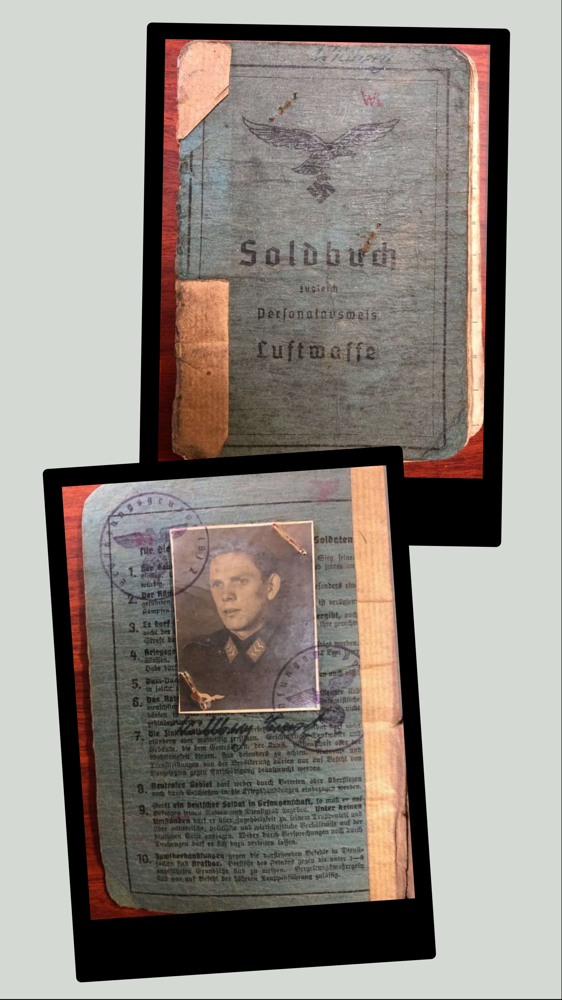
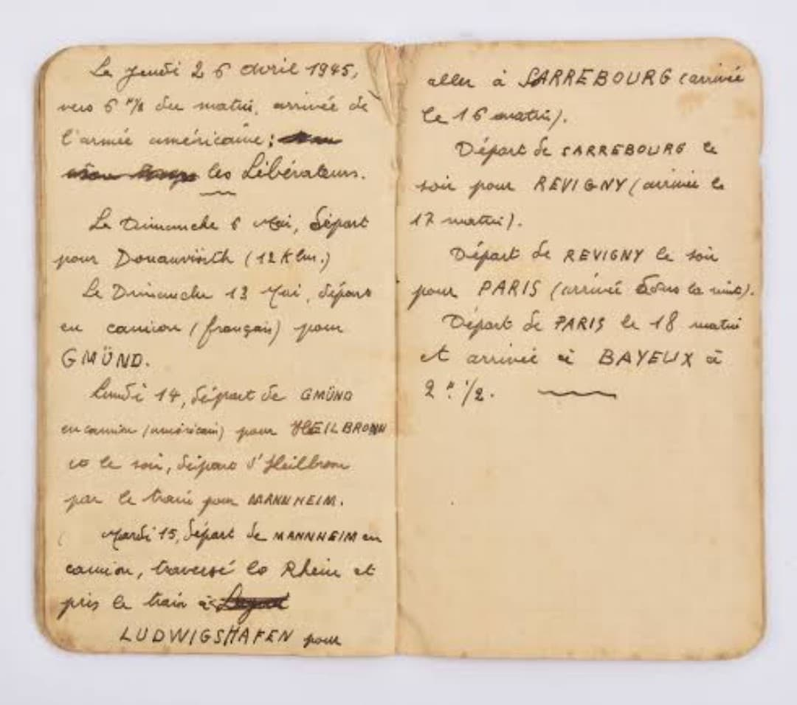
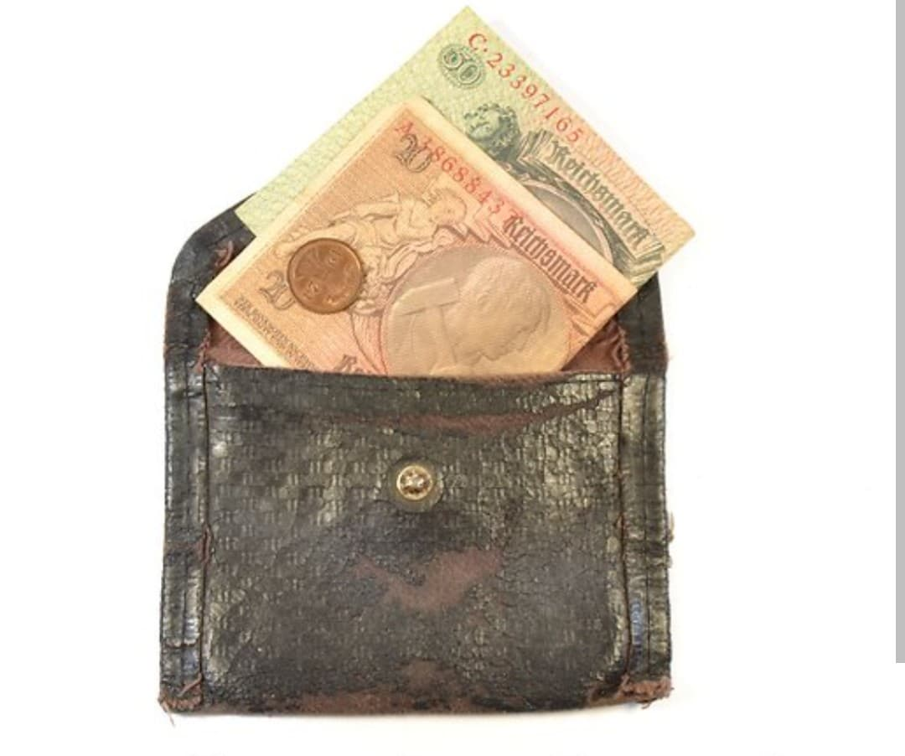
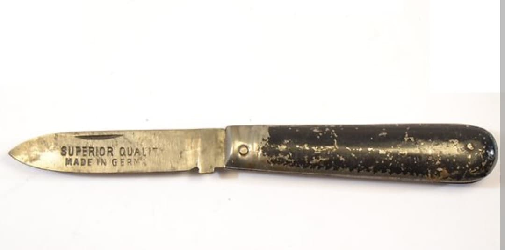
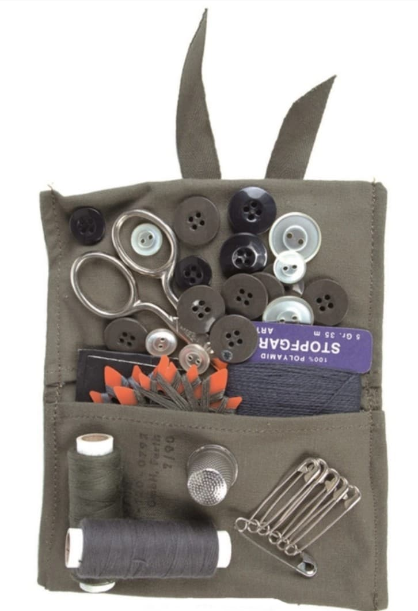
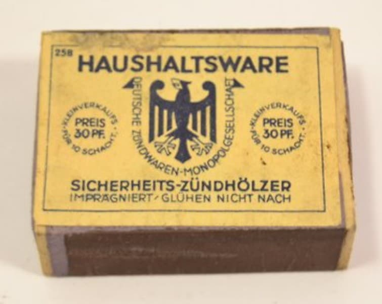
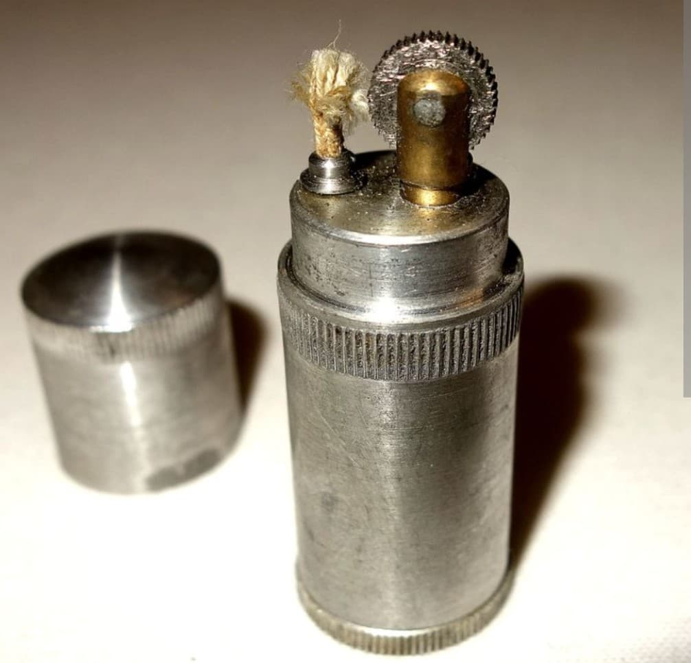
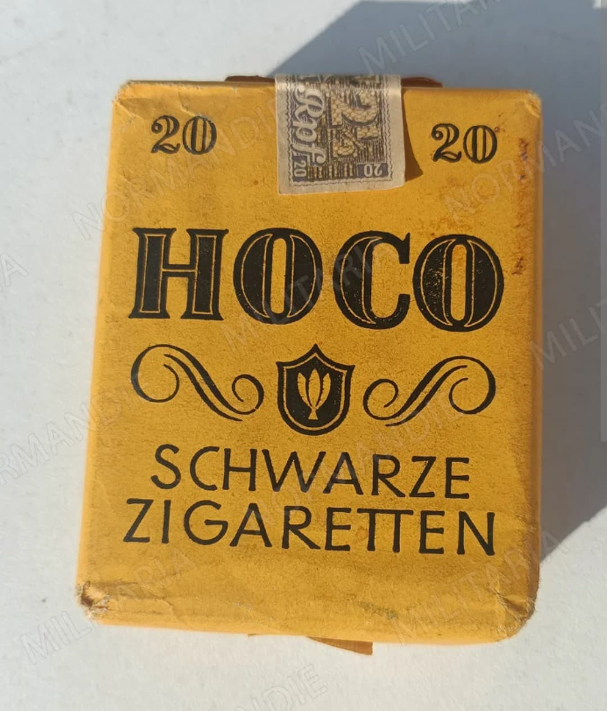
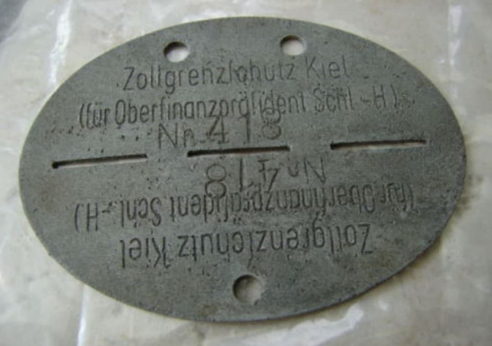

En campagne, le soldat allemand de la Wehrmacht glisse dans les poches de sa vareuse (*Feldbluse*) ou de son pantalon une série d’effets personnels indispensables. Papiers militaires, carnets, accessoires pour fumer ou objets utilitaires constituent son quotidien intime loin du front, révélant la réalité matérielle du combattant allemand entre 1939 et 1945.
Le livret militaire personnel (*Soldbuch*) et la carte d'identité militaire (*Wehrpass*), obligatoires sur soi en permanence.

Petit carnet de notes personnel pour consigner des informations de service ou des souvenirs.

Porte-monnaie en cuir contenant les pièces et billets en Reichsmark.

Couteau pliant utilitaire indispensable pour la vie de tous les jours au campement.

Petite pochette pliante contenant fils, aiguilles et boutons de rechange réglementaires pour l'entretien de l'uniforme.

Briquet de type civil ou militaire et boîte d'allumettes allemande.


Paquets de cigarettes allemandes de marque militaire ou civile et tabac à rouler.

Plaque sécable en zinc ou aluminium portée autour du cou sur une cordelette, permettant d'identifier le soldat et saun unité en cas de décès.
